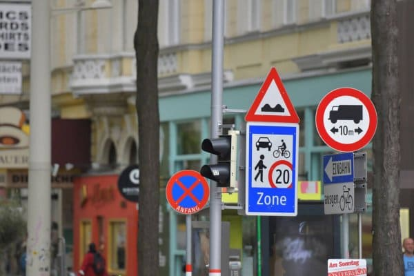
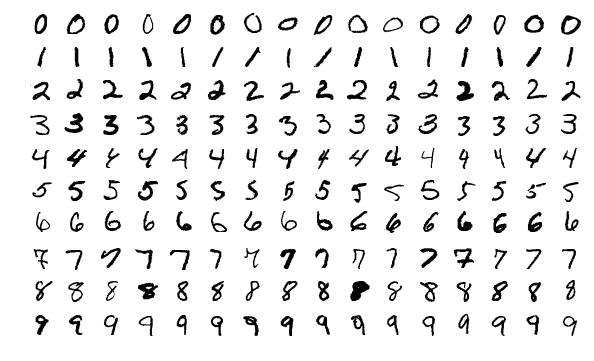
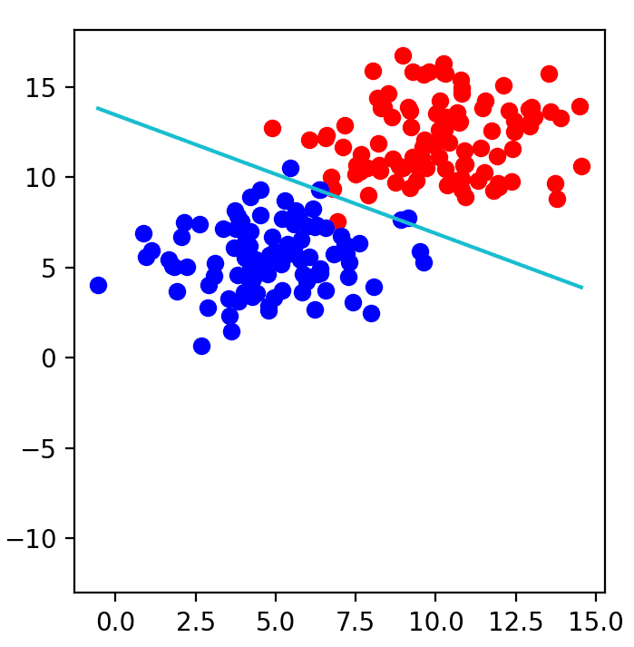
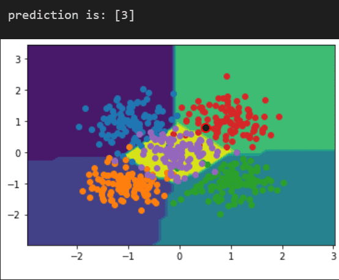

Traffic sign classification using Convolutional Neural Network
For higher levels of vehicle autonomy to be able to drive safely, detection of traffic signs and identifying each of the signs becomes essential for safe navigation of autonomous vehicles on road. This project focuses on developing a convolutional neural network that reads the road sign images and classifies them correctly.

Using CNN to classify handwritten digits with TensorFlow and Keras
To build a simple neural network and train it to recognize handwritten digits using the MNIST dataset. Processing the image to identify the digit and return a series of 10 numbers corresponding to the ten digits

Minimizing cross-entropy loss in binary classification
Implementing linear regression, a supervised learning algorithm that allows us to make predictions based on linearly arranged datasets.Developing a linear model that fits the data with minimal error by learning from previously labelled data using stochastic gradient descent.

Building & training Convolutional Neural Network for multiclass classification with Keras
Generating custom dataset with sklearn library.Assigning labels to the dataset for classification and plotting decisioun boundries using contours. Building a predictive classification model to predict the class of unseen points

|

 |
|